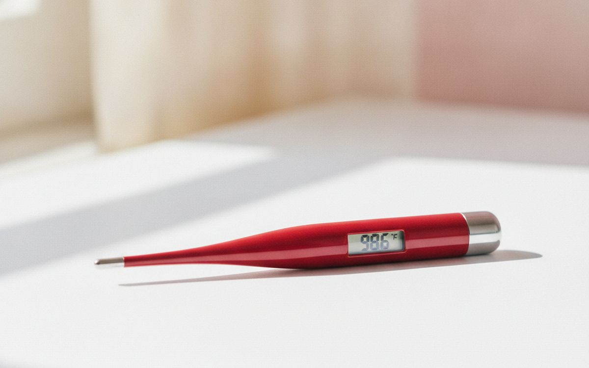
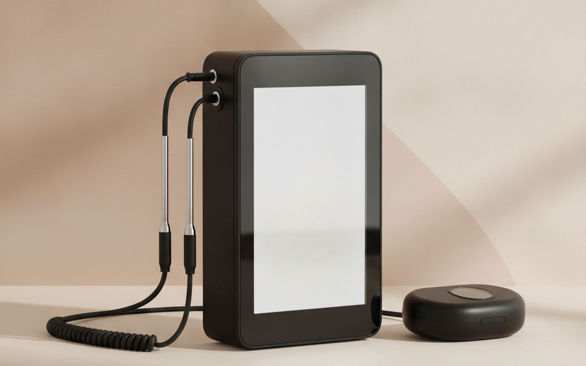
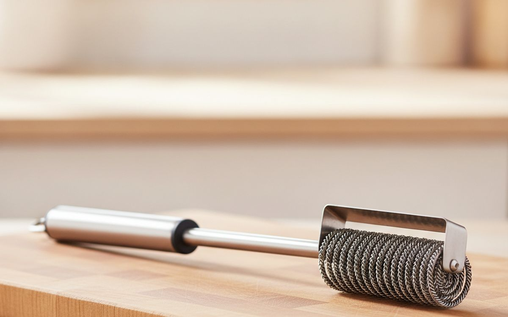
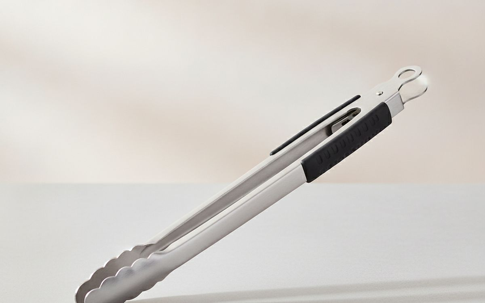
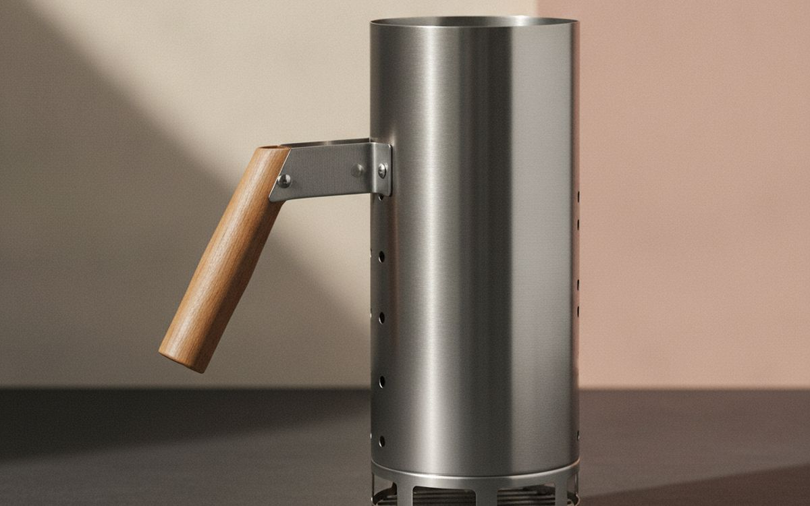
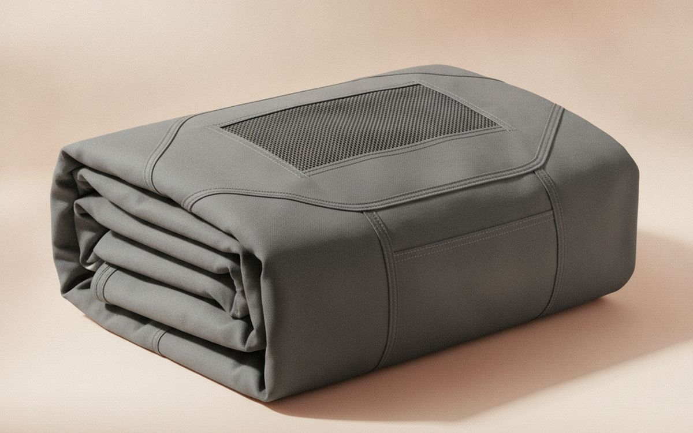
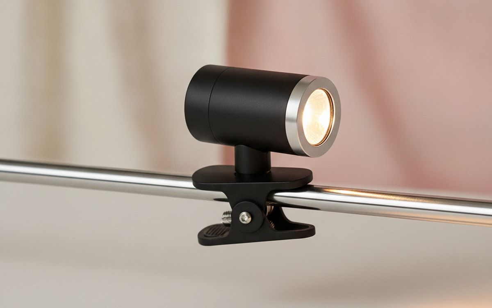
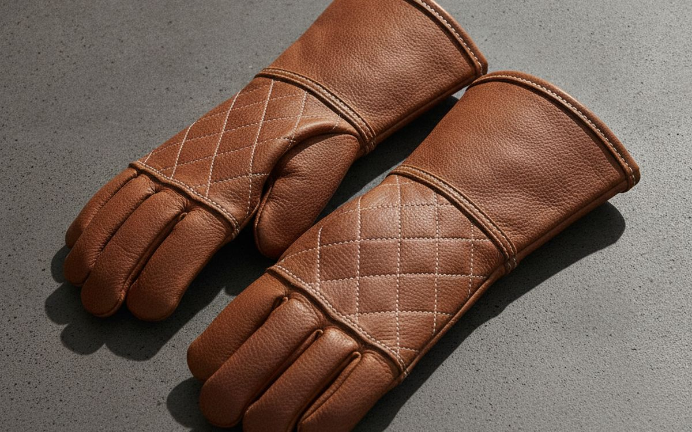
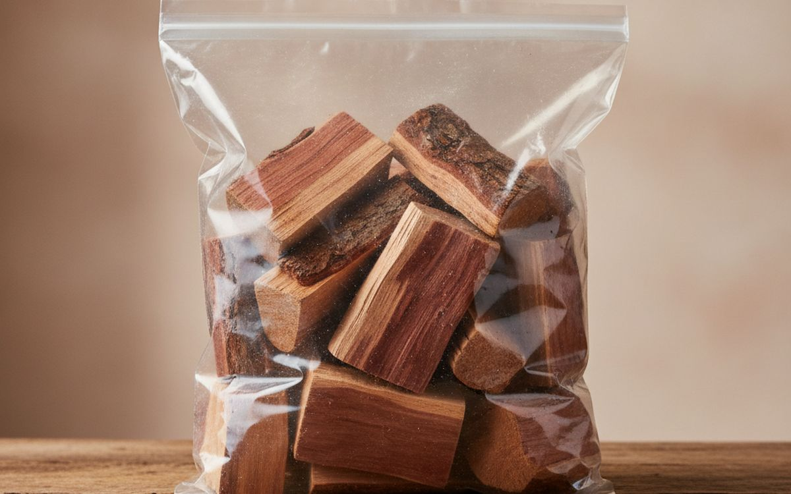
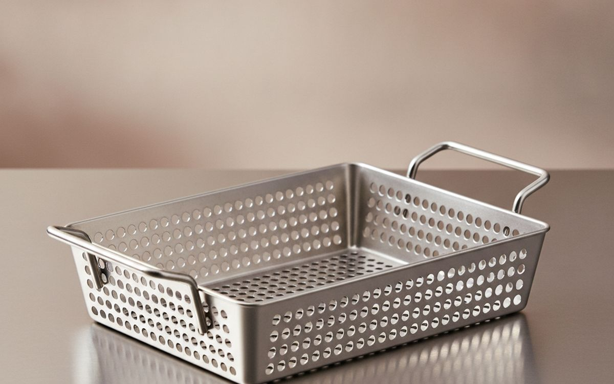

ברביקיו מוצלח נשען על כלים אמינים והבנה ברורה של פעולת החום, לא על גימיקים שיווקיים או גאדג'טים מיותרים.
גריל נשמע פשוט: אש, אוכל, חברים. אבל כלים רבים מבטיחים לפשט אותו עוד יותר, ולעיתים קרובות מוסיפים עומס במקום זאת. רוב האנשים קונים את הגריל הראשון שלהם, ואז צוברים אביזרים לאט לאט. זה לעיתים קרובות אומר קניית פריטים כפולים או כאלה שנכשלים במהירות. ערכה בסיסית של כלים אמינים תשרת אתכם טוב יותר ממגירה מלאה בגאדג'טים לשימוש חד-פעמי. התמקדו בעמידות ובפונקציה ליבה על פני תכונות נוצצות.
המלכודת הגדולה ביותר בציוד ברביקיו היא האמונה שיותר יקר פירושו תוצאות טובות יותר. משימות רבות, כמו הפיכת המבורגרים או בדיקת מידת עשייה, אינן דורשות ציוד מיוחד ועתיר טכנולוגיה. ניתן להשיג תוצאות מצוינות עם פריטים בסיסיים ואיכותיים. במקום זאת, השקיעו בכלים שמודדים במדויק תנאים או מגנים עליכם מפני חום באופן אמיתי. דלגו על כל דבר שטוען שהוא משפר את טעם האוכל באמצעות מנגנון כלשהו.
גילוי נאות. הקישורים בעמוד הזה הם קישורי שותפים. אם תקנו דרכם אנחנו עשויים להרוויח עמלה, בלי תוספת עלות לכם. זה לא משפיע על מה שנכנס לרשימה או על הסדר שלו.
איך בחרנו
ההמלצות שלנו מבוססות על מפרטים זמינים לציבור, ביקורות מומחים ומשוב משתמשים נפוץ ממגוון מקורות. אנו מעדיפים כלים הידועים בעמידותם, דיוקם ועיצובם הפשוט. אנו מחפשים מוצרים שפותרים בעיה אמיתית מבלי להכניס מורכבויות חדשות. איננו מבצעים בדיקות מעשיות של מוצרים אלה. הבחירות שלנו נועדו לספק ערך מעשי ואריכות ימים, ולעזור לכם להימנע ממלכודות נפוצות בציוד ברביקיו.
השוואה מהירה
המחירים הם הערכה נכון לזמן הכתיבה ומשתנים לעיתים קרובות.
הבחירות

1
בדקו טמפרטורת מזון במהירותThermoWorks ThermoPop
$35-45
מדחום לקריאה מיידית הוא הכלי החשוב ביותר לגריל. הוא מבטיח בטיחות מזון ומונע בישול יתר. ה-ThermoPop קורא טמפרטורה תוך פחות משלוש שניות, שזה מהיר מספיק לרוב השימושים. התצוגה המסתובבת שלו שימושית לזוויות שונות. הדיוק הוא בדרך כלל בטווח של מעלה אחת פרנהייט. אל תסתמכו רק על צבע כדי לשפוט מידת עשייה; טמפרטורה פנימית היא האינדיקטור האמין היחיד. דגם זה עמיד בפני מים, אך לא אטום לחלוטין. הוא משתמש בסוללת AAA אחת, שהיא נפוצה וקלה להחלפה. זהו כלי בסיסי אמין שעובד.
בעד
- קורא טמפרטורה תוך פחות מ-3 שניות
- תצוגה מסתובבת לצפייה קלה
- סוללת AAA נפוצה
נגד
- לא אטום לחלוטין למים, רק עמיד בפני מים
- תצוגה קטנה עלולה להיות קשה לקריאה בשמש חזקה

2
נטרו בישולים ארוכים מרחוקThermoWorks Smoke X2
$170-200
לסשנים ארוכים של גריל, כמו עישון בריסקט או צליית עוף שלם, מדחום עם חיישן אלחוטי הוא בעל ערך רב. ה-Smoke X2 כולל שני חיישנים, המאפשרים לכם לנטר גם את הטמפרטורה הפנימית של הבשר וגם את טמפרטורת הסביבה בגריל. טווח האלחוט שלו מרשים, לעיתים עד 6,500 רגל בקו ראייה, מה שאומר שאתם יכולים להיות בתוך הבית ועדיין לקבל עדכונים. יחידת המקלט כוללת תצוגה ואזעקות משלה. זה עוזר להימנע מפתיחה מתמדת של מכסה הגריל, הגורמת לתנודות טמפרטורה. זוהי השקעה משמעותית למדחום, אך אמינה לטבחים רציניים.
בעד
- טווח אלחוטי מצוין
- מנטר שתי טמפרטורות בו-זמנית
- עמיד ועמיד בפני התזות
נגד
- מחיר גבוה למדחום
- חיישנים יקרים להחלפה אם ניזוקים

3
נקו רשתות בבטחהGrillart Grill Brush and Scraper
$20-30
ניקוי רשתות הגריל חיוני להיגיינה ולמניעת הידבקות מזון. מברשות עם סיבים מסורתיים מהוות סיכון אם סיבים נשברים ומתערבבים במזון. מברשת ללא סיבים, כמו עיצוב זה של סליל נירוסטה, מבטלת את הסכנה הזו. המגרד המשולב עוזר להסיר שאריות עקשניות ודבוקות. השתמשו בה בזמן שהגריל עדיין חם, אך לא לוהט מדי, לקבלת התוצאות הטובות ביותר. היא לא תגרום לרשתות ישנות להיראות חדשות, אך היא תסיר פסולת רופפת ביעילות. צפו שתצטרכו להשקיע מאמץ, מכיוון שאף מברשת לא הופכת את הניקוי לקל. עמידות היא גורם מפתח כאן.
בעד
- אין סיבים מסוכנים שעלולים לנשור
- מגרד יעיל לכתמים קשים
- מבנה עמיד מנירוסטה
נגד
- דורש יותר מאמץ צחצוח מאשר מברשות סיבים מסוימות
- עלול לשרוט ציפויים עדינים של רשתות אם משתמשים בו לא נכון

4
טפלו במזון חם בבטחהOXO Good Grips 16-Inch Locking Tongs
$15-25
מלקחיים ארוכים הם בסיסיים למניפולציה בטוחה של מזון על גריל חם. האורך של 16 אינץ' מרחיק את הידיים מחום ישיר. מלקחי ה-OXO Good Grips כוללים ידיות רכות ומונעות החלקה וראשים משוננים המספקים אחיזה בטוחה על פריטים כמו ירכי עוף או קלחי תירס. מנגנון נעילה שומר אותם סגורים לאחסון קומפקטי. הימנעו ממלקחי מתכת זולים ודקים שמתכופפים בקלות או שיש להם קפיצים חלשים. אלה רק יתסכלו אתכם. בעוד שהם מספקים למרבית משימות הגריל, פריטים כבדים מאוד כמו צלי גדול עשויים לדרוש כלי חזק יותר, אך להפיכת סטייקים והזזת ירקות, הם אמינים.
בעד
- אורך טוב להגנה מפני חום
- אחיזה בטוחה על פריטי מזון
- מנגנון נעילה לאחסון
נגד
- עלולים להרגיש רופפים עם נתחי בשר כבדים מאוד
- ידיות גומי עלולות להתבלות לאורך זמן בחום גבוה

5
הדליקו פחם ללא נוזלWeber Rapidfire Chimney Starter
$20-30
מתנע ארובה לפחם הוא הדרך היעילה והנקייה ביותר להדליק לבנים או פחם גושים. הוא מבטל את הצורך בנוזל הדלקה, שיכול להעניק טעם כימי לא נעים למזון. מלאו את החלק העליון בפחם, הניחו עיתון או חומר הדלקה בתחתית, והדליקו אותו. עיצוב הארובה יוצר זרם אוויר חזק, הגורם לפחמים להאדים במהירות ובאחידות תוך כ-15-20 דקות. הוא פועל על ידי ריכוז חום. בעוד שהוא מאיץ את התהליך, עדיין צריך לחכות שהפחמים יתכסו באפר. הוא דורש זהירות מסוימת, מכיוון שהמתכת מתחממת מאוד במהלך השימוש.
בעד
- מבטל את הצורך בנוזל הדלקה
- מדליק פחם במהירות ובאחידות
- עיצוב פשוט ועמיד
נגד
- מתכת מתחממת מאוד במהלך השימוש
- תופס מקום אחסון

6
הגנו על הגריל שלכם בחוץClassic Accessories Veranda Grill Cover
$40-70
כיסוי גריל מגן על ההשקעה שלכם מפני מזג האוויר ומאריך את חייו. סדרת Veranda של Classic Accessories עשויה מבד עמיד ועמיד במים עם מכפלת אלסטית ורצועות אבזם כדי לשמור עליה מאובטחת בתנאי רוח. היא כוללת גם פתחי אוורור למניעת עיבוי וטחב, שהיא בעיה נפוצה עם כיסויים זולים ולא נושמים. אל תקנו כיסוי שטוען שהוא 'מתאים אוניברסלי' מבלי לבדוק מידות; מדדו את הגריל שלכם בזהירות. בעוד שהוא מגן מפני גשם ושמש, הוא לא ימנע חלודה לחלוטין אם הגריל שלכם עשוי מחומרים באיכות נמוכה. זהו מוצר חיצוני, אז צפו שהוא ידהה עם הזמן.
בעד
- בד עמיד ועמיד במים
- פתחי אוורור מונעים עובש
- רצועות אבזם מאובטחות לתנאי רוח
נגד
- כבד ומגושם לאחסון כשאינו בשימוש
- בד ידהה לאחר שנים של חשיפה לשמש

7
האירו את משטח הבישול שלכםGrillPro LED Grill Light
$20-35
גריל בלילה או בתנאי תאורה חלשה יכול להיות מאתגר, מה שמקשה לראות את מידת עשיית המזון או אפילו היכן אתם מניחים פריטים. מנורת גריל LED פשוטה עם קליפס מאירה את משטח הבישול שלכם ישירות. דגם GrillPro משתמש בנורות LED בהירות ויש לו ראש מתכוונן כדי לכוון את האור בדיוק היכן שצריך. התפס החזק שלו מתחבר לרוב ידיות הגריל או שולחנות הצד. אל תצפו שהוא יאיר את כל הפטיו שלכם; מטרתו היא תאורה ממוקדת. חיי הסוללה משתנים עם השימוש, וסוללות זולות עלולות להתרוקן במהירות. זוהי נוחות, לא חובה, אך שימושית עבור גרילרים ליליים תכופים.
בעד
- תאורת LED בהירה וממוקדת
- תפס חזק מתאים לרוב הגרילים
- ראש מתכוונן לכיוון מדויק
נגד
- דורש סוללות, שצריך להחליף מדי פעם
- עלול להטיל צללים אם לא ממוקם בזהירות

8
הגנו על הידיים מחוםRapicca 16-inch Leather Grill Gloves
$30-45
טיפול ברשתות גריל חמות, התאמת פתחי אוורור, או הזזת פחם חם דורש הגנה רצינית מפני חום לידיים ולאמות שלכם. כפפות עור כבדות אלה, הממותגות לעיתים קרובות ככפפות ריתוך, מציעות בידוד תרמי משמעותי. האורך של 16 אינץ' מספק כיסוי טוב מעבר לפרק כף היד. הן לא מיועדות לטבילה ישירה במים רותחים, אלא למגע קצר עם משטחים חמים. העובי שלהן גורם לאובדן מסוים של מיומנות, כך שמשימות מוטוריות עדינות יהיו קשות יותר. הן עלולות להרגיש קשיחות בהתחלה אך מתרככות עם הזמן. אל תקנו כפפות 'סיליקון' דקות שטוענות לעמידות בחום קיצוני; הן לעיתים קרובות מספקות פחות הגנה מהמובטח לחום מתמשך.
בעד
- הגנת חום מצוינת לידיים ולאמות
- מבנה עור עבה ועמיד
- רב-תכליתי (ריתוך, אח)
נגד
- מיומנות מופחתת עקב עובי
- עלולות להרגיש קשיחות עד שמתרככות

9
הוסיפו טעם מעושן למזוןWestern Premium BBQ Cherry Wood Chunks
$15-25
הוספת נתחי עץ לגריל פחם מכניסה טעם מעושן, המשפר את הברביקיו שלכם. עץ דובדבן מציע עשן עדין ופירותי שמשתלב היטב עם עוף, חזיר ואפילו ירקות, מבלי להיות חזק מדי. בניגוד לשבבי עץ, נתחים בוערים לאט יותר ומייצרים עשן עקבי יותר לאורך תקופה ארוכה יותר. הימנעו משימוש ביותר מדי עץ; כמה נתחים מספיקים לעיתים קרובות, במיוחד למתחילים, מכיוון שעשן מוגזם עלול להפוך את המזון למר. השרו נתחים במים לזמן קצר לפני השימוש כדי להאריך את משך העשן, אם כי יש הטוענים שזה לא הכרחי לחלוטין. זהו תוסף, לא מקור חום עיקרי.
בעד
- מספק טעם מעושן עקבי ועדין
- בוער לאט יותר משבבי עץ
- משתלב היטב עם סוגי בשר שונים
נגד
- עלול להפוך את המזון למר אם משתמשים ביותר מדי
- דורש תשומת לב לניטור פלט העשן

10
גריל מזונות קטנים ועדיניםWeber Deluxe Stainless Steel Grill Basket
$30-45
פריטים קטנים או עדינים כמו ירקות קצוצים, שרימפס או פילטים של דגים נופלים לעיתים קרובות דרך רשתות הגריל או קשים להפיכה. סל גריל פותר זאת על ידי החזקתם בצורה מאובטחת תוך שהוא עדיין מאפשר חשיפה לחום ישיר ועשן. סל ה-Weber Deluxe עשוי מנירוסטה, שהיא עמידה וקלה יחסית לניקוי. החורים מאפשרים לחום להסתובב ולעשן לחדור. אל תעמיסו עליו יתר על המידה, אחרת המזון יתאדה במקום להיצלות. הוא יתחמם, וידרוש כפפות לטיפול. בעוד שהוא שימושי, זהו עוד פריט לאחסון ולניקוי, וניתן להשיג תוצאות דומות עם חבילות נייר אלומיניום, אם כי עם פחות צריבה.
בעד
- מונע ממאכלים קטנים ליפול דרך הרשתות
- מאפשר חשיפה אחידה לחום ועשן
- מבנה עמיד מנירוסטה
נגד
- עוד פריט לניקוי ואחסון
- דורש כפפות לטיפול כשהוא חם
שאלות נפוצות
האם פחם יקר שווה את זה?
עבור רוב הגרילים הביתיים, לבנים סטנדרטיות או פחם גושים מספקים בהחלט. פחמים 'גורמה' יקרים מבטיחים לעיתים קרובות בעירה חמה יותר או טעמים ייחודיים. בעוד שחלק מהפחם גושים בוער נקי יותר עם פחות אפר, ההבדל בטעם לבישולים קצרים הוא לרוב זניח, במיוחד אם אתם מוסיפים גם עץ. חסכו את כספכם על פחם פרימיום לפרויקטים ספציפיים מאוד של עישון ארוך שבהם איכות הדלק עשויה לעשות הבדל קטן. להמבורגרים וסטייקים, פחם בסיסי עובד מצוין. התמקדו יותר בשליטה על הטמפרטורה מאשר במותג הדלק.
האם כדאי לי לקנות ספריי ניקוי ייעודי לגריל?
רוב תרסיסי הניקוי הייעודיים לגריל אינם נחוצים ולעיתים קרובות מכילים כימיקלים שאולי תעדיפו להימנע מהם ליד משטחי הבישול שלכם. לניקוי שוטף, מברשת טובה ללא סיבים ומים חמים וסבון מספיקים בדרך כלל. לשומן עקשן ודבוק, נסו לחמם את הרשתות, לגרד אותן היטב, ואז לתת להן להתקרר לפני צחצוח עם מסיר שומנים חזק או אפילו משחה של סודה לשתייה ומים. שטפו תמיד היטב אם משתמשים בכימיקלים. ה'מנקה' הטוב ביותר הוא למעשה ניקוי עקבי לאחר כל שימוש, המונע הצטברות מלכתחילה.
האם אני צריך סט כלים נפרד לגריל מהכלים של המטבח שלי?
סט נפרד של כלי גריל מומלץ מאוד. כלי גריל הם לרוב ארוכים יותר, חזקים יותר, ומעוצבים לעמוד בטמפרטורות גבוהות יותר מאשר כלי מטבח טיפוסיים. הם גם נוטים להתלכלך יותר ולפתח שאריות מעושנות שאולי לא תרצו להכניס למטבח שלכם. פריטים כמו מרית ארוכה, מלקחיים ומזלג לבשר הם חיוניים לטיפול בטוח במזון מעל להבה פתוחה. בעוד שמרית מטבח בסיסית עשויה לעבוד במקרה חירום, היא מסתכנת בשריפת הידיים ולעיתים קרובות חסרה את הטווח או החוזק הדרושים למשימות גריל. זוהי השקעה בבטיחות ובנוחות.
האם מחצלות גריל או כיסויי גריל שימושיים לבישול נון-סטיק?
מחצלות גריל וכיסויי גריל מוצקים יכולים למנוע הידבקות מזון ולמנוע מפריטים קטנים ליפול דרך הרשתות. עם זאת, הם יוצרים מחסום בין המזון שלכם ללהבה הישירה, מה שיכול להפחית צריבה ולמנוע את טעם הגריל האותנטי וסימני הצריבה שרבים רוצים. הם הופכים את הגריל שלכם ליותר כמו פלטה. אם אתם רוצים טעם גריל וצריבה מקסימליים, עדיף להשקיע בסל גריל טוב לפריטים קטנים או לוודא שהרשתות שלכם נקיות מאוד ומשומנות היטב. השתמשו במחצלות רק אם אתם מעדיפים נון-סטיק על פני צריבה מלאה.
← כל המדריכים
הגשנו בקשה להצטרף לתוכנית השותפים של אמזון. איננו שותפים של אמזון עדיין, ואיננו מרוויחים דבר מקישורים לאמזון בשלב זה. כשותפים של עליאקספרס אנחנו מרוויחים עמלה מרכישות מזכות. המחירים והזמינות נכונים לזמן הפרסום ועשויים להשתנות.